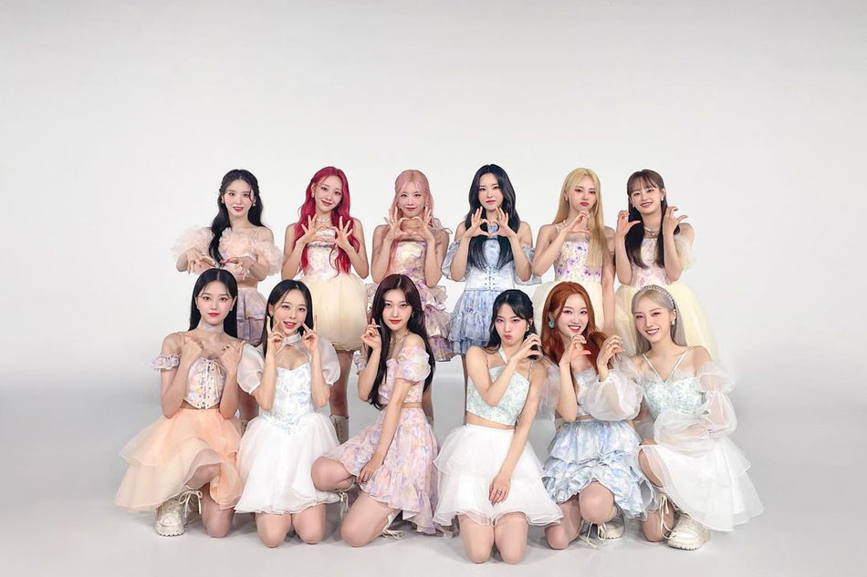
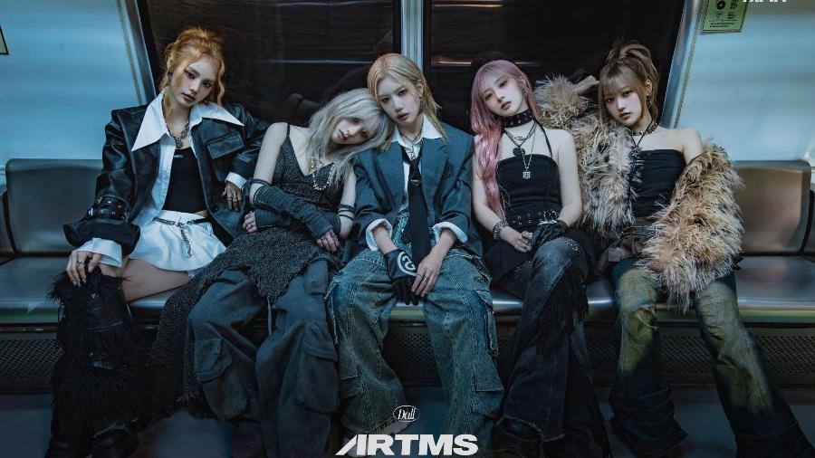
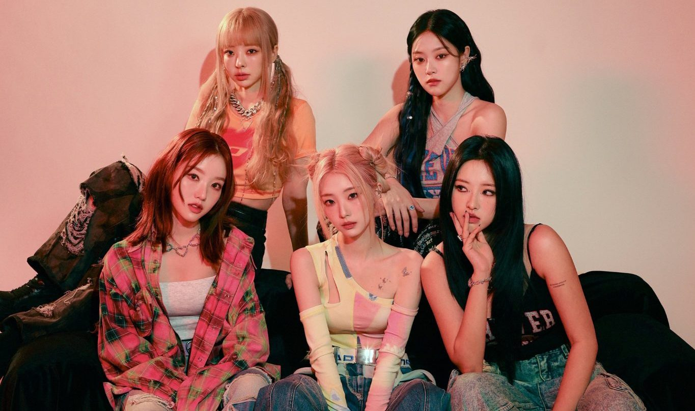
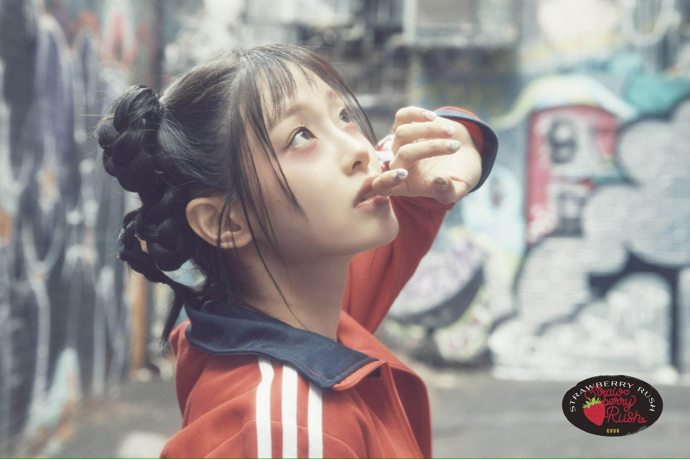
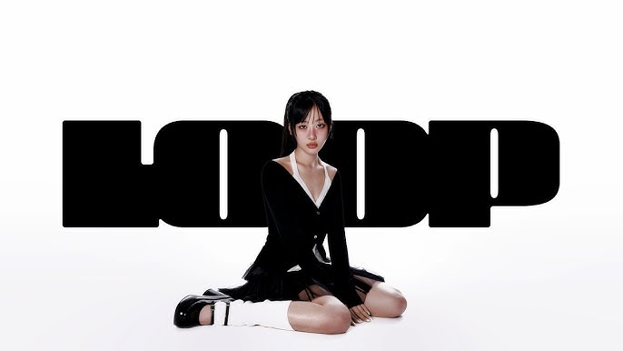

LOONA: Un legado que sigue brillando

LOONA (이달의 소녀) fue un innovador grupo de 12 integrantes conocido por su concepto único y su universo musical interconectado. Desde 2016, cada miembro fue presentada individualmente con su propia canción antes de unirse como grupo completo en 2018 con "[++]" y el tema "Hi High".
Con subunidades como LOONA 1/3, ODD EYE CIRCLE y yyxy, lograron un sonido diverso y una estética inigualable. Canciones como "Butterfly", "So What" y "Flip That" consolidaron su fama global.
En 2023, problemas con su agencia llevaron a su disolución, pero las integrantes renacieron en nuevos proyectos: ARTMS, Loossemble y carreras en solitario. Aunque LOONA ya no existe como grupo, su legado sigue vivo en la música y en sus fans, los Orbits.
ARTMS: Un Sonido Experimental que Trasciende Fronteras

ARTMS, conformado por Heejin, Haseul, Kim Lip, Jinsoul y Choerry, ha emergido como un proyecto vanguardista que va más allá del K-pop. Su sonido experimental, que fusiona géneros como el electro, el pop alternativo y la música electrónica, está atrayendo a una audiencia global. Con influencias internacionales y un enfoque creativo único, ARTMS no solo busca redefinir la música de Loona, sino también trascender las fronteras de la industria, explorando nuevas perspectivas artísticas que resuenan con diferentes culturas y mercados musicales.
Loossemble: Una Nueva Era Musical con Diversidad de Estilos

Loossemble, integrado por Hyunjin, Yeojin, Vivi, Gowon y Hyeju, ha debutado con un concepto fresco y audaz que combina géneros como el pop alternativo, trap y electrónica. Este subgrupo no solo se destaca por su estilo musical innovador, sino también por su enfoque artístico que abarca más allá de la música, buscando conectar con una audiencia diversa a través de sus visuales y propuestas culturales. Loossemble está listo para ofrecer algo distinto, sin limitarse al K-pop, y atraer a aquellos que buscan explorar sonidos alternativos y más globales.
Chuu: Un Redebut con Autenticidad y Emoción

Chuu ha dado un giro interesante a su carrera con su redebut como solista, marcando su transición hacia géneros como el indie pop y el electropop. Su música refleja una mezcla de dulzura y madurez, mostrando su crecimiento personal y artístico. Este nuevo enfoque no solo la consolida como una artista multifacética dentro del K-pop, sino que también la coloca en la escena musical global, donde sus letras profundas y su voz única están conectando con un público más amplio, ansioso por ver cómo sigue evolucionando.
Yves: La Voz de la Innovación y la Elegancia en Solitario

Yves ha dejado en claro que su música solista no está limitada solo al ámbito del K-pop. Su sonido se desplaza por diferentes géneros, incluyendo elementos de indie pop, electrónica suave y hasta sonidos más experimentales. Al igual que Chuu, Yves busca trascender las fronteras del K-pop, consolidándose como una artista que se arriesga con su música, creando atmósferas que invitan a la reflexión y la introspección. Este redebut no solo marca el comienzo de su carrera en solitario, sino que también coloca a Yves en una nueva posición dentro de la música global.